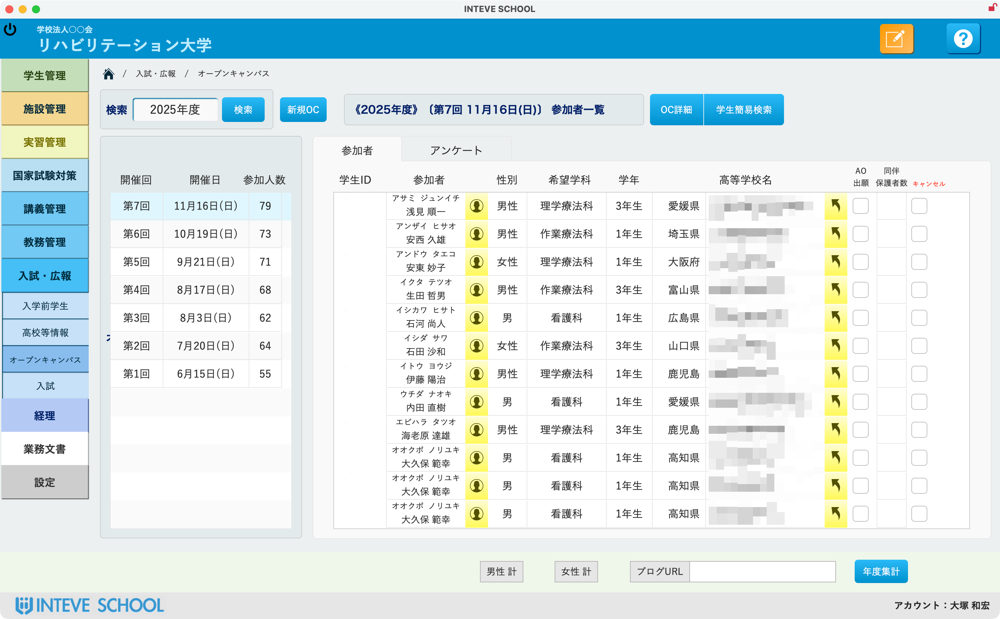
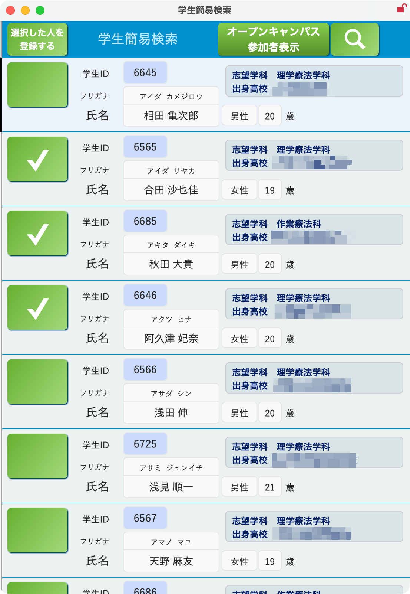
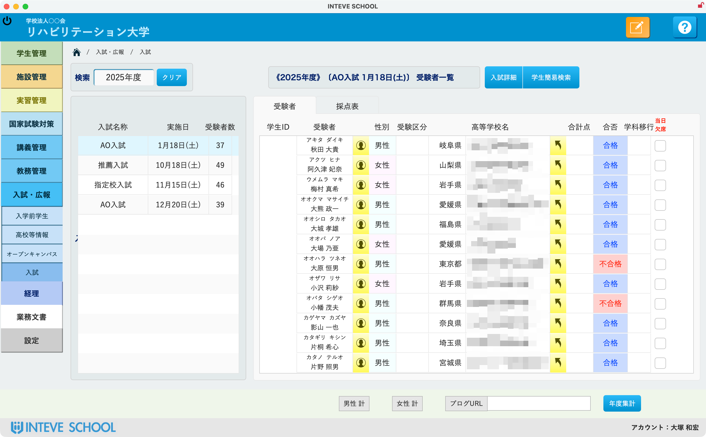
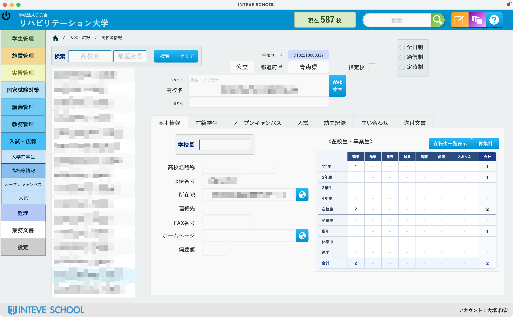
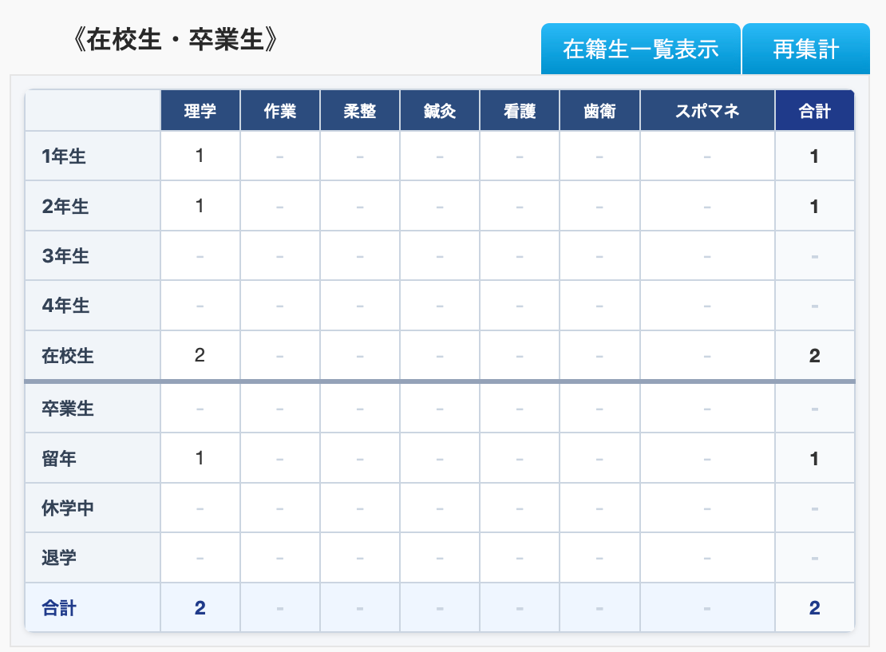
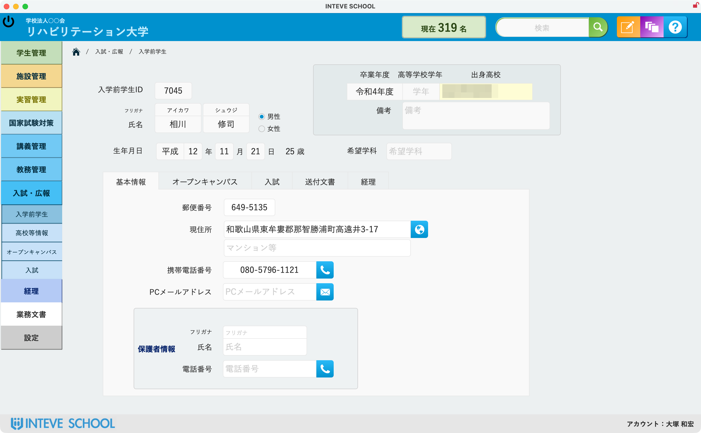

Web受付からOC、入試、入学まで、募集データを一つの流れへ。
Googleフォーム等のWeb受付データを自動取り込み、手打ちの転記ミスを完全排除。オープンキャンパス参加者をボタン1つで入試受験者へ、合格者をそのまま正式入学生へ移行。分断されていた広報・入試業務をシームレスに統合します。


Web受付フォーム自動連携
Googleフォーム等のWebサイト申込から参加者データを自動取り込み。氏名、高校、志望学科の手打ち転記作業をゼロにします。
オープンキャンパス管理
開催回ごとの日程・参加人数・男女比を即座に集計。出欠確認、アンケート回収状況、同伴保護者数まで一目で把握できます。
入試・採点・合否 ＆ 学籍移行
「学生簡易検索」からワンボタンでOC参加者を入試受験者へ昇格。AO・推薦・指定校の合否判定と合格者の入学生登録まで完結。

蓄積された志望者・高校データが、確かな募集戦略になる。
出身高校ごとの在校生・卒業生実績を即座にクロス集計。学生カルテによる緻密な個別フォローと、データに基づく効率的な高校訪問を実現します。
高校等情報DB ＆ 在校生・卒業生マトリクス
全日・通信・定時、公立/私立、偏差値、指定校フラグを一元化。学科別×学年別の在校生・卒業生・留年マトリクスを瞬時に集計し、注力すべき高校を可視化。


入学前学生カルテ ＆ アプローチ履歴管理
志望学科、出身高校、本人・保護者連絡先、オープンキャンパス来校歴、入試結果、資料送付履歴を一元管理。歩留まりを高める的確なフォローを実現。

Webフォーム自動連携とボタン1つの入試・学籍昇格で重複入力を根絶。
高校別在校生・進学実績マトリクスで重点アプローチ校を瞬時に特定。
手書き・Excel転記の取り違えをシステム自動連動で完全に防止。
貴校の入試区分・出願Webフォームに合わせて実機デモをご体験いただけます
現在運用中のExcel様式やWeb受付フォームからの移行もスムーズ。専任エンジニアが初期設定から本番運用まで丁寧にサポートします。